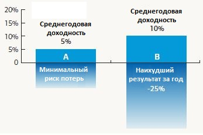
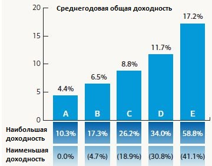

Вопрос 1. Когда вы инвестируете деньги, какова ваша главная цель?
Вопрос 2. Степень, с которой стоимость инвестиций увеличивается и уменьшается, называется волатильность (это одна из мер риска). Более волатильные инвестиции, как правило, на долгосрочном горизонте обеспечивают больший потенциал роста, чем менее волатильные инвестиции, но они могут привести к большим потерям. С какой волатильностью вам комфортно?
Вопрос 3. Крайне консервативные инвестиции иногда зарабатывают меньше уровня инфляции. Это может привести к потере покупательной способности. В отношении ваших инвестиционных целей, что из нижеперечисленного является наиболее верным?
Вопрос 4. Вы понимаете, что стоимость инвестиций со временем будет колебаться, в зависимости от суммы принимаемого риска. С какой приблизительной потерей в течение одного года вы готовы смириться, прежде чем принять решение об изменении своих инвестиций?
Вопрос 5. Рассмотрим две различных инвестиции: Инвестиции A, которые обеспечивают среднегодовую доходность 5% с минимальным риском потери стоимости; и Инвестиции B, которые обеспечивают среднегодовую доходность 10% с возможностью потерь в размере –25% или более в любом году. Как бы вы распределили свой капитал для инвестиций?

Вопрос 6. Если бы вы могли выбрать только один из пяти гипотетических портфелей, представленных ниже, какой бы вы выбрали?

Примечание. Эти гипотетические портфолио не соответствуют моделям Профиля Инвестора Merrill Lynch. Вариант «A» представляет наименьший риск, тогда как Вариант «E» представляет наибольший риск. Нет никаких временных рамок для перемещения между минимальной и максимальной годовой доходностью, этот график используется только для определения устойчивости к риску.
Вопрос 7. Как скоро вам потребуются все или значительная часть ваших инвестиционных активов?
Вопрос 8. Ваши общие инвестиционные активы имеют размер менее 1 миллиона долларов?
Вопрос 9. Если ваш ответ на Вопрос 8 – «Нет», то сумма, которую вы инвестируете, составляет менее 10% от общей суммы ваших инвестиционных активов?